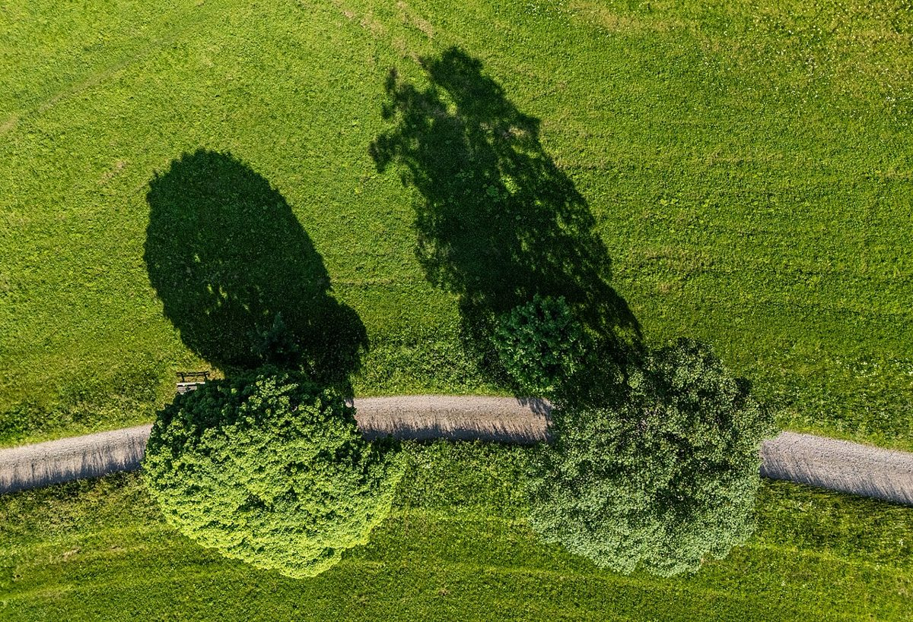

Le charme authentique de la Forêt-Noire

Introduction
La Forêt-Noire (Schwarzwald en allemand) est une région emblématique du sud-ouest de l'Allemagne, connue pour ses vastes forêts, ses villages pittoresques et ses traditions culinaires. Entre randonnées, gastronomie et détente, voici comment profiter au mieux de ce cadre idyllique.
Comment s'y rendre
La Forêt-Noire est facilement accessible depuis les grandes villes allemandes comme Stuttgart ou Francfort. Les voyageurs internationaux peuvent atterrir à l'aéroport de Bâle-Mulhouse-Fribourg (à proximité) ou opter pour le train. Le réseau ferroviaire relie bien les principales localités, mais une voiture est recommandée pour explorer les coins reculés.
Quand visiter
Chaque saison a son charme : le printemps et l'été sont parfaits pour les randonnées et les lacs, tandis que l'automne offre des paysages flamboyants. En hiver, la région se transforme en un paradis blanc, idéal pour le ski ou les marchés de Noël.
3 incontournables de la Forêt-Noire
1. Le lac de Titisee
Un cadre enchanteur pour se promener, nager ou déguster une glace artisanale. En hiver, les environs sont propices aux sports d'hiver.
2. Triberg et ses cascades
Les chutes d'eau de Triberg sont parmi les plus hautes d'Allemagne. Le village abrite aussi le musée de l'horloge à coucou, une spécialité locale.
3. La route des vins de Bade
À l'ouest de la Forêt-Noire, cette route offre des paysages vallonnés et de délicieux vins blancs à déguster dans les caves locales.
Spécialités culinaires
La Forêt-Noire est réputée pour sa gastronomie généreuse. Ne manquez pas :
- Le Schwarzwälder Kirschtorte (gâteau Forêt-Noire) – un délice à base de chocolat, cerises et crème.
- La Schwarzwälder Schinken (jambon fumé), souvent servi avec du pain noir.
- Les Maultaschen – des ravioles farcies, typiques de la région.
Conseils pratiques
Prévoyez des chaussures confortables pour les randonnées et un vêtement imperméable, le temps peut changer rapidement. Pour une expérience immersive, logez dans un Gasthof (auberge traditionnelle). Et surtout, prenez le temps de flâner dans les petits villages pour en savourer l'authenticité.
Conclusion
La Forêt-Noire est une destination polyvalente qui séduit les amoureux de nature, de gastronomie et de culture. Que ce soit pour un week-end ou un séjour prolongé, cette région allemande ne déçoit jamais.
Haiktec
- Histoires Magiques pour le Dodo : 7 Contes Enchantés pour les Petits Explorateurs de 3 à 8 Ans
- Planificateur de Budget de Déménagement & Rénovation 2026
- Le Petit Guide du Jardinier Autosuffisant: 7 Étapes Simples pour Cultiver Vos Légumes Toute l'Année
Text mit KI erstellt und automatisch geprueft.